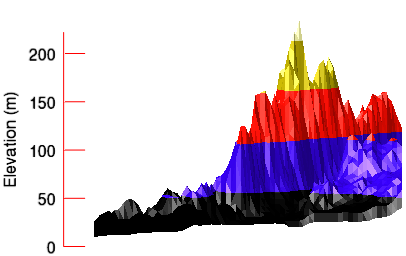
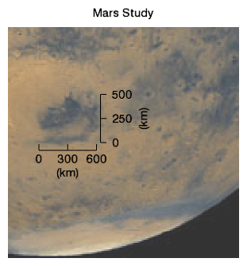

You can add or change axes in graphics. The examples on this page include adding axes to an image and adding and changing the properties of an axis on a three-dimensional contour graphic.
Axes on an image help illustrate the dimensions (number of pixels) in each direction, as shown in the following example:
; Define the data by reading the image into IDL,
; creating the aerial_view variable to hold the data.
aerial_view = FILEPATH('elev_t.jpg', $
SUBDIR=['examples','data'])
; Display the image.
im = IMAGE(aerial_view)
xax = AXIS('X', TRANSPARENCY=50, LOCATION=[0,0])
yax = AXIS('Y', TRANSPARENCY=50, LOCATION =[0,0])
The example shows a digital elevation model (DEM) taken from the Santa Monica mountains in California. This three-dimensional example illustrates how to add a Z axis to the graphic after creation.

; Define the data.
file = file_which('elevbin.dat')
dem = read_binary(file, data_dims=[64,64])
; Display the data.
c = CONTOUR(dem, $
RGB_TABLE=5, $
/FILL, $
PLANAR=0, $
AXIS_STYLE=0)
; Rotate the graphic.
c.ROTATE, -30, /ZAXIS
c.ROTATE, -25, /XAXIS
; Create a Z axis using the AXIS function.
z = AXIS(2)
; Change the AXIS properties.
z.MINOR=0
z.TICKLEN=0.10
z.COLOR='red'
z.TEXT_COLOR='black'
z.TITLE='Elevation (m)'
Axes may also be added at arbitrary locations, and with custom offset and scale factors. For example:

; Define the image to display.
file = FILEPATH('marsglobe.jpg', $
SUBDIRECTORY = ['examples', 'data'])
; Display the mars image.
mglobe = IMAGE(file, TITLE='Mars Study', $
XRANGE=[175, 325], YRANGE=[0, 150], $
TRANSPARENCY=20)
marsDiameter = 6792 ; km
scaleFactor = marsDiameter/400 ; km/pixel
; Insert an X scale.
; Lock the axis to the DATA position.
; Restrict the AXIS_RANGE.
; Use COORD_TRANSFORM to convert coordinates.
ax1 = AXIS('x', LOCATION=[0,70,0], $
TITLE='(km)', $
/DATA, $
AXIS_RANGE=[0,600], $
COORD_TRANSFORM=[-195,1]*scaleFactor, $
MINOR=0, MAJOR=3)
; Insert a Y scale.
; Lock the axis to the DATA position.
; Restrict the AXIS_RANGE.
; Use COORD_TRANSFORM to convert coordinates.
ax2 = AXIS('y', LOCATION=[235,0,0], $
TITLE='(km)', TEXTPOS=1, $
/DATA, $
AXIS_RANGE=[0,500], $
COORD_TRANSFORM=[-75,1]*scaleFactor, $
MINOR=0, MAJOR=3)